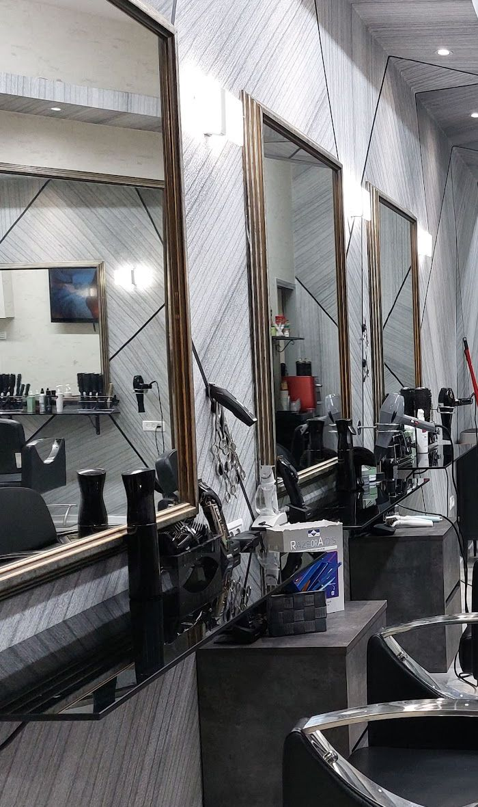
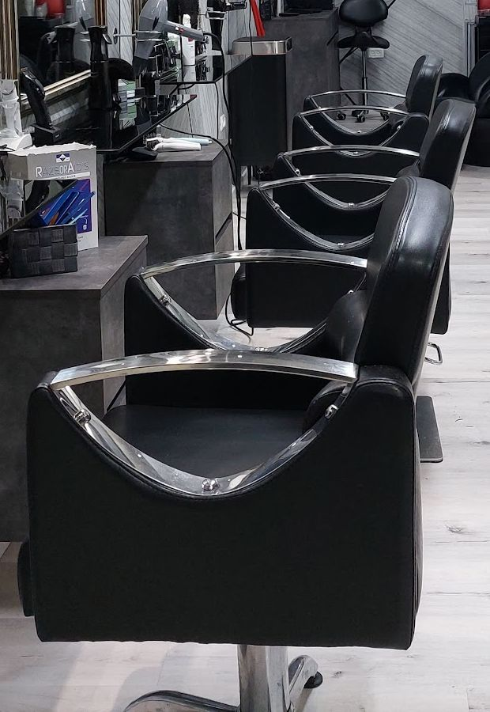
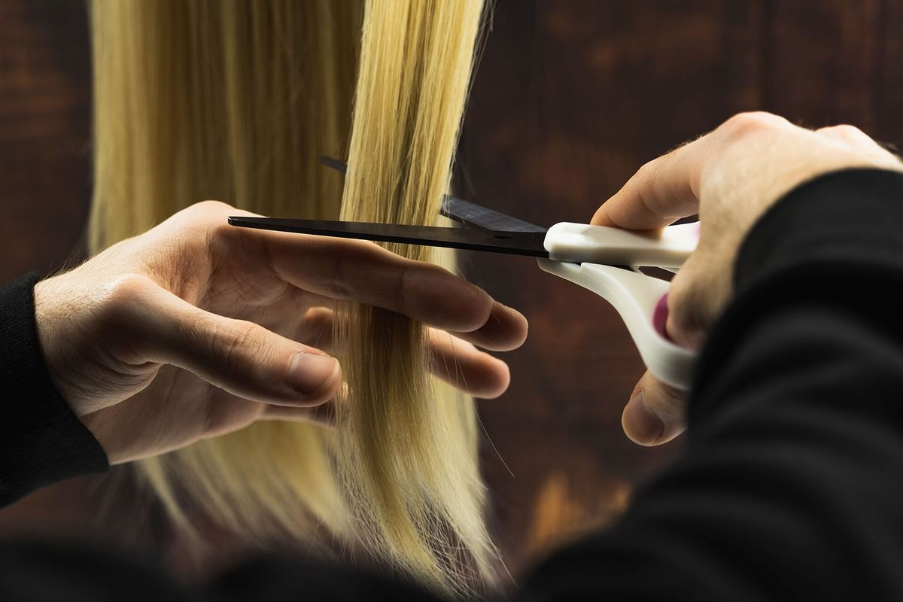
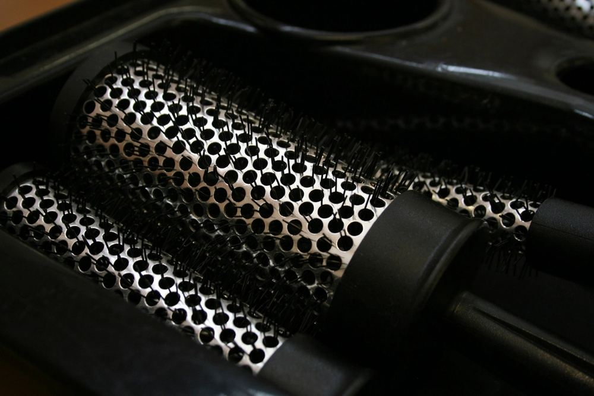
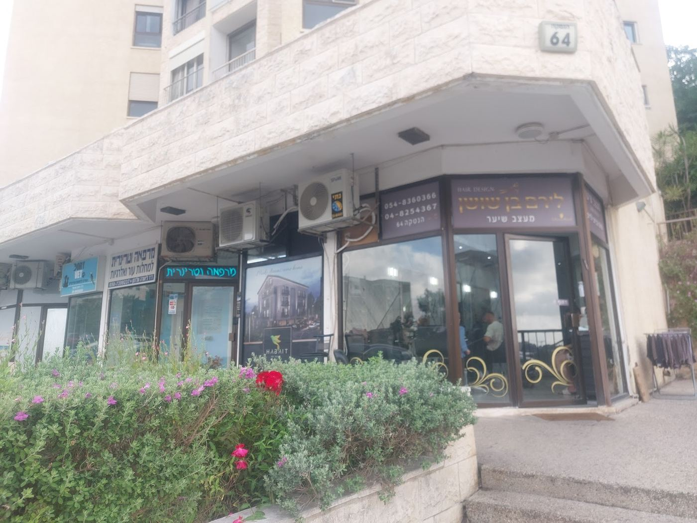

לירם בן שושןLiram Ben Shushan
מעצב שיער · תספורות ועיצוב לנשים ולגברים, ארתור הנטקה 64, חיפהHair design · cuts and styling for women and men, 64 Arthur Hantke St, Haifa
הסלון בהנטקה 64 · מתמונות העסק בגוגלThe salon at 64 Hantke · from the business’s Google photos
הסלון מבפניםInside the salon
קיר אפור שחוצים אותו קווים שחורים, מראות במסגרות זהב וכיסאות עור שחורים.A grey wall crossed by black lines, gold-framed mirrors and black leather chairs.

המראות 
הכיסאות 
תמונה להמחשהIllustrative photoתספורת - 126 ביקורות בגוגל126 reviews on Google

תמונה להמחשהIllustrative photoפן ועיצוב 
הכניסה
הודעה ללירםA note to Liram
בוחרים, וההודעה נכתבת על השלט.Choose, and the message is written on the sign.
מה כותבים על לירםWhat people write about Liram
מתוך 126 ביקורות בגוגלfrom 126 Google reviews
עברתי לשכונה לא מזמן, המליצו עם לירם, הגעתי. מאוד מרוצה.
I moved to the neighbourhood not long ago, people recommended Liram, so I came. Very happy.
מספרה עם אווירה נעימה. תספורת מדוייקת ומהירה. מומלץ ביותר
A barbershop with a pleasant atmosphere. A precise, quick haircut. Highly recommended.
מקום מספר 1 בחיפה רק הוא נוגע לי בשיער!!
The number 1 place in Haifa, only he touches my hair!!
ספר סבלני וזריז, לא חיכיתי ויצא מצויין
A patient, quick barber. I didn’t wait and it came out excellent.
ביקורות אמיתיות מגוגל, מצוטטות כלשונן.Real Google reviews, translated from Hebrew.
ארתור הנטקה 6464 Arthur Hantke
חיפה. נכנסים מהרחוב, דרך דלת הזכוכית עם עיטורי הזהב.Haifa. In from the street, through the glass door with the gold swirls.
שעותHours
ליצור קשרGet in touch
וואטסאפ ללירםWhatsApp Liram 054-836-0366 04-825-4367 ניווט בגוגל מפותDirections in Google Mapsהשלט שמעל הכניסהThe sign above the door
שאלותQuestions
באילו ימים פתוח?Which days is it open?
ראשון ושלישי עד חמישי 9:00–18:30, שישי 9:00–13:00. שני ושבת סגור.Sunday and Tuesday to Thursday 9:00–18:30, Friday 9:00–13:00. Closed Monday and Saturday.
יש גם טלפון נייח?Is there a landline too?
כן, על השלט מופיע גם 04-825-4367.Yes, the sign also lists 04-825-4367.
לנשים או לגברים?For women or for men?
לשניהם. בביקורות בגוגל כותבים עליו גם נשים וגם גברים.Both. His Google reviews come from women and men alike.